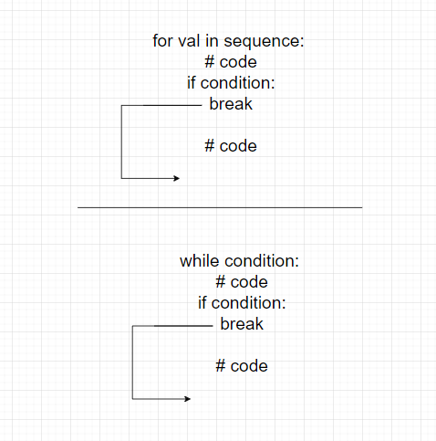
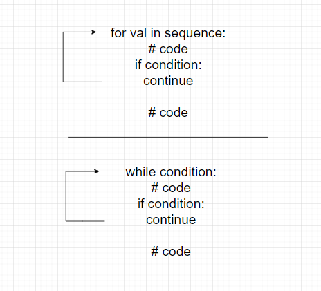

break операторы циклді тез аяқтау үшін пайдаланылады, оны көрсетілген уақытта циклді толығымен тоқтату үшін.
break операторының синтаксисі:
break

break операторының for циклі мен while циклі ішінде жұмысы жаталады.
Біз for циклімен break операторын пайдалану арқылы циклді белгілі шартты орындау кезінде тоқтатуға болады. Мысалы,
for i in range(5):
if i == 3:
break
print(i)
Шығармашылық
0
1
2
Жоғарыдағы мысалда, for цикліні пайдалану арқылы i мәнін басып шығарамыз. break операторын пайдалануны көріңіз,
if i == 3:
break
Мұнда, i 3-ге тең болса, break операторы циклді тоқтатады. Сондықтан, шығарманың ішінде 2-ден кейінгі мәндер жатататылмайды.
Ескертпе:
breakоператоры ескертпе жасау операторларымен әрекет етеді.
break операторын пайдалану арқылы біз while цикліні тоқтатуға болады. Мысалы,
# 6-ның бірінші 5 бөлшегін табу программасы
i = 1
while i <= 10:
print('6 * ',(i), '=',6 * i)
if i >= 5:
break
i = i + 1
Шығармашылық
6 * 1 = 6
6 * 2 = 12
6 * 3 = 18
6 * 4 = 24
6 * 5 = 30
Жоғарыдағы мысалда, біз 6-ның бірінші 5 бөлшегін табу үшін while цикліні пайдаланбыз. Мұнда
if i >= 5:
break
деген жердегі ретте, i 5-тен көбі болса, while циклі тоқтайды.
continue операторы текущую итерацияны өткізіп, программаның бағдарлама ағымдағы итерацияға өту үшін пайдаланылады.
continue операторының синтаксисі:
continue

continue операторының for циклі мен while циклі ішінде жұмысы жаталады.
Біз continue операторын for циклімен пайдалану арқылы циклдің ағымдағы итерациясын өткізу үшін пайдалана аламыз. Содан кейін программаның бағдарламасы келесі итерацияға өтеді. Мысалы,
for i in range(5):
if i == 3:
continue
print(i)
Шығармашылық
0
1
2
4
Жоғарыдағы мысалда, біз for цикліні пайдалану арқылы i мәнін басып шығарамыз. continue операторын пайдалануны көріңіз,
if i == 3:
continue
Мұнда, i 3-ге тең болса, continue операторы іске асырылады. Сондықтан, 3 мәні шығарманыңызға енгізілмейді.
Python-да біз continue операторын пайдалану арқылы while циклінің ағымдағы итерациясын өткізе аламыз. Мысалы,
# 1-ден 10-ге дейін жасалатын сандарды шығару программасы
num = 0
while num < 10:
num += 1
if (num % 2) == 0:
continue
print(num)
Шығармашылық
1
3
5
7
9
Жоғарыдағы мысалда, біз 1 -ден 10 -ге дейін жасалатын сандарды шығару үшін while цикліні пайдаланбыз. continue операторын пайдалануны көріңіз,
if (num % 2) == 0:
continue
Мұнда, сан жуғырымды болмаса, continue операторы ағымдағы итерацияны өткізіп, келесі итерацияны бастайды.